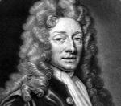

Bir matematikçi ve astronom olarak eğitilen Christopher Wren (1632-1723) 1666 yılındaki büyük yangından sonra Londra’yı yeniden inşa eden mimar olarak ün kazandı. Aralarında Aziz Paul Katedrali’nin de bulunduğu düzinelerce yapının inşasında rol oynadı. Yangından sonra şehrin mimari yenilenmesindeki sorumluluk neredeyse tamamen ona aittir.

Wren’in Londra’daki mezarında yazanlar bu durumu çok net bir şekilde ifade etmektedir: “Okuyucu, eğer bir anıt arıyorsan etrafına bak.”
Wren Oxford’a gitti ve 1661 yılında üniversitede astronomi profesörü oldu. Bir yandan da amatör olarak mimari ile ilgileniyordu. Üniversitede bir tiyatro tasarladı. Yangına kadar uzun yıllar boyunca üniversiteki kürsüsünü bırakmamış ve tam anlamıyla profesyonel mimar olarak çalışmamıştı.
2 Eylül 1666’dan 5 Eylül 1666’ya kadar süren büyük Londra Yangını, şehir tarihindeki en büyük felaketlerden biriydi. Yangın bir fırında başlamış ve hıncahınç dolu Orta Çağ şehrinin diğer noktalarına hızla sıçramıştı. Yangın söndürülene kadar neredeyse şehrin üçte ikisi harap olmuştu.
Wren, yangından birkaç gün sonra Londra’ya vardığında hemen şehri yeniden tasarlamak için bir plan hazırlamaya başladı. Yeniden inşa işlemini yürüten kraliyet komisyonuna atandı. Sonraki elli yıl boyunca İngiltere’nin en etkili mimarı olacaktı.
Avrupa Barok mimarisinden etkilenen Wren, kimileri tarafından geleneksel İngiliz mimarisinden uzaklaştığı gerekçesiyle eleştiriliyordu. Parlamento onun Aziz Paul Katedrali için yaptığı çizimlere birkaç kez müdahale etti. Hatta bir keresinde onu daha hızlı çalışmaya sevk etmek için maaşına bile el koydular. Ancak bina mimari açıdan bir şaheser oldu. Yıllar sonra Washington’daki Amerika Birleşik Devletleri Kongre Binası’na ve Paris’teki Pantheon’a ilham kaynağı olacaktı.
Wren sonunda yetmiş dokuz yaşındayken binanın inşaatı karşılığında hak ettiği ödemesini alabildi. On bir yıl sonra öldü.
Ek Bilgiler
1- Wren, 1662 yılında bir bilim adamı ve yazarlar topluluğu olan “Royal Society”nin kurucuları arasında yer aldı. Bu grup günümüzde de varlığını korumaktadır. Bu gruba kabul edilmek, İngiliz akademisyenleri için büyük bir onur olarak kabul edilmektedir.
2- Wren, 1675 yılında Greenwich’teki Kraliyet Gözlemevi’ni tasarlama hakkını elde etti. Yapılan uluslararası anlaşmaya göre burası sıfır derece meridyeni olarak kabul edilmiştir.
3- Londra’nın yeniden inşasındaki hizmetleri nedeniyle 2. Charles (1630-1685) tarafından 1673 yılında şövalye ilan edildi.